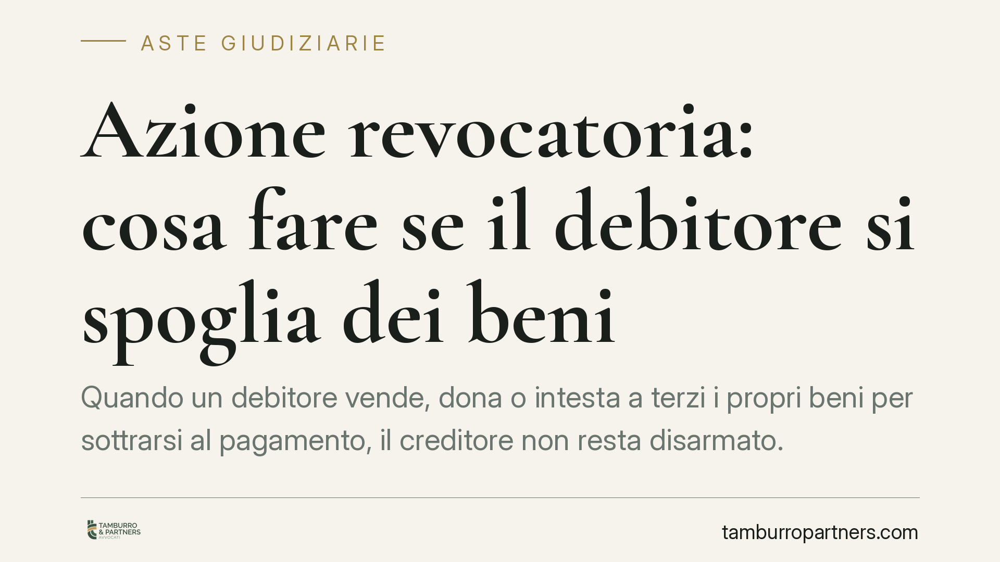

Azione revocatoria: cosa fare se il debitore si spoglia dei beni
Quando un debitore vende, dona o intesta a terzi i propri beni per sottrarsi al pagamento, il creditore non resta disarmato. L'ordinamento prevede l'azione revocatoria, che consente di rendere inefficace l'atto e recuperare la garanzia patrimoniale. Uno strumento decisivo anche in vista di un'esecuzione immobiliare o di un'asta giudiziaria.

Il problema: il patrimonio che sparisce
Un creditore ottiene un titolo, avvia il recupero e scopre che il debitore ha nel frattempo svuotato il proprio patrimonio. La casa è stata donata ai figli, il capannone venduto a un parente, i conti trasferiti. Sulla carta il debitore non possiede più nulla su cui soddisfarsi.
Questa condotta non blocca il creditore. La legge offre un rimedio specifico: l'azione revocatoria ordinaria.
Inquadramento normativo
Il punto di partenza è l'art. 2740 del codice civile: il debitore risponde delle proprie obbligazioni con tutti i suoi beni, presenti e futuri. È il principio della responsabilità patrimoniale. Il patrimonio del debitore è, in sostanza, la garanzia generica dei creditori.
Quando il debitore compie atti che riducono questa garanzia, il creditore può reagire con l'azione revocatoria, disciplinata dall'art. 2901 del codice civile. Lo scopo non è annullare l'atto in senso tecnico, ma renderlo inefficace nei confronti del solo creditore che agisce: il bene alienato torna così aggredibile con l'esecuzione forzata, pur restando formalmente di proprietà del terzo acquirente.
L'art. 2903 del codice civile fissa il termine: l'azione si prescrive in cinque anni dalla data dell'atto che si intende revocare. È un termine da presidiare con attenzione, perché decorso quello il rimedio si perde.
I presupposti dell'azione
Perché la revocatoria abbia successo servono alcune condizioni.
Occorre anzitutto un credito, anche non ancora scaduto o accertato in via definitiva. Serve poi che l'atto del debitore rechi un pregiudizio alle ragioni del creditore (il cosiddetto *eventus damni*): tipicamente, l'atto rende più difficile o impossibile il recupero.
È inoltre necessaria la consapevolezza del pregiudizio in capo al debitore (la *scientia damni*). Se l'atto è successivo al sorgere del credito, basta che il debitore fosse a conoscenza del danno arrecato. Se l'atto è anteriore al credito, la legge richiede la prova più severa di una preordinazione dolosa, cioè che l'atto sia stato compiuto proprio per pregiudicare il futuro creditore.
La posizione del terzo acquirente varia a seconda della natura dell'atto. Per gli atti a titolo gratuito, come le donazioni, non serve dimostrare la malafede del beneficiario. Per gli atti a titolo oneroso, come le compravendite, occorre invece provare che anche il terzo fosse consapevole del pregiudizio (la *participatio fraudis*).
Implicazioni pratiche
Per il creditore, la revocatoria vittoriosa significa poter pignorare un bene formalmente uscito dal patrimonio del debitore. In ambito di esecuzione immobiliare, questo consente di portare all'asta giudiziaria un immobile donato o venduto proprio per sottrarlo all'aggressione.
Attenzione a un aspetto spesso trascurato: la sentenza di revoca produce effetti solo verso il creditore che ha agito e nei limiti del suo credito. Non fa tornare il bene nel patrimonio del debitore a beneficio di tutti.
Per il terzo acquirente, la revocatoria comporta il rischio di vedersi pignorare un bene regolarmente acquistato. Chi acquista da soggetti indebitati deve valutare con prudenza la solidità dell'operazione.
Cosa fare in concreto
- Verifica subito la situazione patrimoniale del debitore. Consulta visure catastali e ipotecarie per individuare gli atti di disposizione recenti su immobili e altri beni.
- Ricostruisci le date. Confronta la data del credito con quella dell'atto sospetto: cambia radicalmente l'onere probatorio a tuo carico.
- Monitora il termine di cinque anni. L'azione si prescrive dalla data dell'atto: non lasciare che decorra prima di attivarti.
- Raccogli gli indizi di frode. Vendite tra parenti, prezzi incongrui, donazioni improvvise sono elementi utili a provare la consapevolezza del pregiudizio.
- Valuta l'azione con un legale prima di procedere all'esecuzione. In molti casi conviene incardinare la revocatoria in parallelo al recupero, per non disperdere tempo e garanzie.
La revocatoria è uno strumento tecnico che richiede un'istruttoria accurata. Un'azione mal impostata, o avviata fuori termine, rischia di compromettere il recupero. Consigliamo di intervenire tempestivamente, appena emergono i primi segnali di spoliazione del patrimonio.
---
Contributo informativo a cura di Tamburro & Partners - Avv. Giuseppe Tamburro. Non costituisce parere legale.
Comprare bene all’asta si può.
Se vuoi acquistare un immobile all’asta in sicurezza o difendere un esecutato, scrivi allo studio. Ti rispondiamo entro un giorno lavorativo.